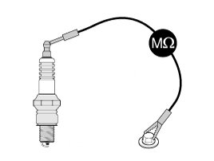
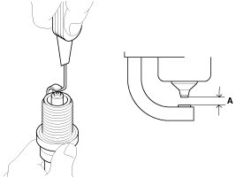
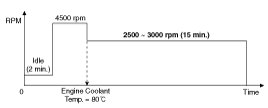
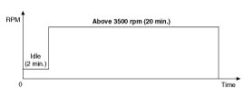
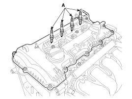

Spark Plug: Service and Repair
Inspection
[On vehicle inspection]
1. Accelerate the engine to about 3,000 rpm 3 times or more.
2. Remove the spark plug.
3. Check the spark plug visually.
If the electrode is dry, the spark plug is normal.
If the electrode is wet, check the damage and electrode gap as below.
[Component Inspection]
1. Check the spark plug for any damage on its thread and insulator.
If there is damage, replace the spark plug.
2. Check the electrode. Measure the insulation resistance with an ohmmeter.
If the resistance is less than the specified value, adjust the electrode gap.
Specification:10 MOhms or more

3. Check the spark plug electrode gap.
If the gap is greater than the maximum, replace the spark plug.
Specification:1.0 - 1.1 mm (0.0394 - 0.0433 in.)
NOTE:
- If adjusting the gap of a new spark plug, bend only the base of the ground electrode. Do not touch the tip.
Never attempt to adjust the gap on a used plug.

Cleaning
The combustion temporarily becomes unstable, due to the aged fuel and the carbon deposits accumulated on the spark plug(s) after long-term storage.
[1st Method]
1. Start the engine and keep the engine running at idle for 2 minutes.
2. Step on the accelerator pedal and hold it steady at 4500 rpm with the shift lever in N position to warm up the engine until the temperature of the engine coolant reaches 80°C.
3. Keep the engine running at 2500 - 3000 rpm in the N position for 15 minutes.

[2nd Method]
NOTE:
- The 2nd method should be performed only if the 1st method fails (the misfire-related codes recur).
1. Start the engine and keep the engine running at idle for 2 minutes.
2. Drive the vehicle for over 20 minutes, keeping the engine speed above 3500 rpm.
NOTE:
- If equipped with manual transaxle, shift the gear properly for keeping the engine speed above 3500 rpm.

Removal
1. Remove the ignition coil.
2. Using a spark plug wrench, remove the spark plug (A).
NOTE:
- Be careful that no contaminates enter into spark plug holes.

Installation
1. Install in the reverse order of removal.
Tightening torque:
14.7 - 24.5 N.m (1.5 - 2.5 kgf.m, 10.8 - 18.0 lb-ft)